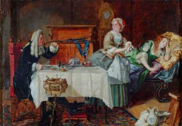
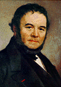
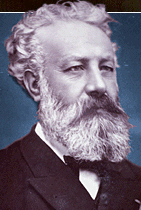

Шедевры мировой кульуры
|
Великие писатели Франции
|
|
|
Франсуа Рабле

|
В 1534г, после его первого посещения Италии, Рабле опубликовал
свою книгу (The vie trшs horrifique du grand Gargantua, pare de
Pantagruel) "Очень ужасная жизнь Великого Гаргантюа, отца
Пантагрюэль" . Он прослеживает жизнь гиганта от его рождения до
создания им Гедонистического аббатства Thulime. Рабле отдает свою
бьющую через край фантазию на службу свои земным героям и
второстепенным характерам, среди которых - студенты, монахи и
простые граждане. Позади необузданной фантазии происходящего,
однако, прячутся гуманистические идеи автора, который передает их
с чувством юмора, заставляющим читателя задуматься. Как он сам
говорил, "все происходящее здесь - это не шутка."
|
 |
Вольтер

|
Философский роман Кандид был опубликован в 1759г. В нем Вольтер
описывает все злоключения молодого человека, который веря в
красоту мира и добродетель человека, не встретил ничего кроме
разочарования и страданий. Он спасся от полного отчаяния только
благодаря словам Турка, который посоветовал ему "забыть о мире
возможно быстрее, работая в его саду." С ужасной иронией,
пессимизмом и жестоким чувством юмора, автор осуждает доктрину
оптимизма, принесшую популярность Лейбницу.
|
 |
Мольер

|
В 1669г, после пяти лет изнурительной борьбы против религиозного
фанатизма некоторых членов двора и Католической иерархии, Мольер
смог поставить свою пьесу Tartuffe ou l'imposteur (Тартюф или
Обманщик). Его враги не забыли его за изображение лицемера,
готового обмануть своего защитника и лишить его имущества,
флиртовать с его женой и получить в жены его дочь. Мольер
использовал свой сюжет, осуждая лицемерие и безжалостную злобу
религиозных мошенников, чтобы создать блистательную интригу
семнадцатого века, написанную в самом прекрасном классическом
стиле.
|
 |
Стандаль

|
Опубликованный в 1830г роман Стендаля Le Rouge et le Noir (Красное
и черное) основан на реальных событиях - попытке убийства учителем
матери двух своих учеников. После разбирательства дела в суде
города Isire, он был признан виновным и был казнен. Не делая
особых изменений в сюжете, Стендаль написал "роман о силе" , в
котором каждый герой описан с абсолютным мастерством и редкой
аккуратностью. Многими людьми этот роман признается величайшим
Французским романом девятнадцатого столетия.
|
 |
Жюль Верн

|
Опубликованная в 1870г Двадцать тысяч лье под водой рассказывает о
десяти месяцах, проведенных в плавании под океанами Французским
натуралистом Аронаксом и его слугой после того, как они были
против своей воли помещены на борт подводной лодки. Под
командованием Капитана Немо Наутилус боролся с террором на морских
просторах. Среди гигантских осьминогов и островов с каннибалами,
от Суэцкого перешейка до Антарктики, в компании команды сорвиголов
приключения и драматические обороты становились легкими и
быстрыми. Ни в одной из своих остальных книг Жюль Верн не показал
такого уровня мастерства, с такой убедительностью соединяя выдумку
и научный прогресс.
|
 |